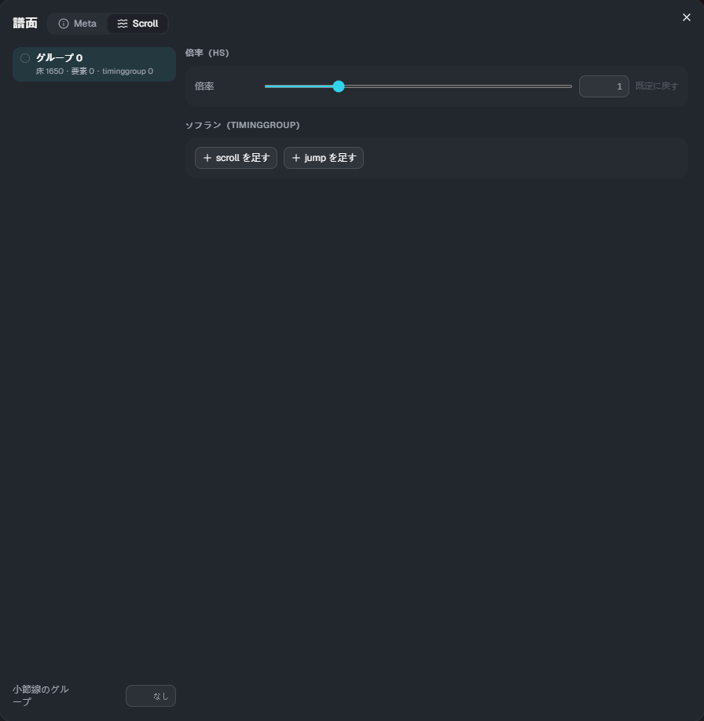

流れ方（Scroll）
床のノーツは、何も書かなければ譜面の scroll（譜面エディターの effect の scroll / jump）どおりに流れます。 「流れ方」では、譜面の scroll / jump を直せるほか、ノーツグループごとに流れ方を変えられます。判定の時刻は変わりません（見える位置だけが変わります）。
ノーツのグループは、譜面エディターのノーツグループ機能か、ES3 Studio のプロパティの グループ で付けます。グループを付けていない床のノーツは**グループ 0（既定）**です。
開き方
タイムラインの道具の帯の 「Scroll」 を押します（Meta と同じダイアログの、Scroll のタブが開きます）。

- 左: 一番上が 譜面（.mc）、その下がグループの一覧です。グループには床のノーツ・要素・timinggroup の数が出ます。タイムラインのノーツ・空中要素・トレースは、グループごとの色で縁取られます
- グループを足す: まだ使っていない番号のグループを一覧に足します（hs・ソフランを入れるか、ノーツに付けると残ります）
- 右: 選んだものの設定。グループの見出しには、譜面の scroll と timinggroup のどちらで流れるかが出ます
- 小節線のグループ: 小節線をどのグループと同じ流れ方にするか（既定はグループ 0）
スマホの縦持ちでは、一覧が上に並び、表は 時刻・種類・値・Duration だけの詰めた形で出ます（ease・削除は行の ▾ で開きます）。
譜面の scroll / jump
譜面（.mc）の effect の scroll と jump です。表の使い方は下のソフランと同じです（Duration・ease はありません）。 保存すると .mc に書き戻します。hs・sign など、ここで直せない行はそのまま残ります。
timinggroup の無いグループは、譜面の scroll で流れます。timinggroup のあるグループには効きません。
倍率（hs）
そのグループの流れる速さに、曲全体で一定の倍率を掛けます。0.1〜10 で、1 が既定（大きいほど速い）です。右の ↺ で 1 に戻ります。
ソフラン（timinggroup）
そのグループだけの速さの変化です。
- 表の見出しの帯の ＋scroll / ＋jump で、再生線の位置に行を足します。足した行はいつも表の一番下に入ります（時刻を直しても行は動きません。拍の順に並ぶのは、開き直したときです）
- 種類は色の札（scroll は空色、jump は赤）です。値の横に単位（scroll は ×、jump は ms）が出ます
- 表の中だけがスクロールし、列の見出しは止まったままです。再生線の時刻で効いている行は、左に色の帯が付きます
- 行の欄に入ると、再生線がその時刻へ動きます（止まっているとき）
- scroll: その時刻から速さを「値」に変えます。Duration を入れると、その長さ（拍）をかけて動き方（ease）に沿ってなめらかに変えます。
0:0/1（0）ならすぐ変わります。Duration は1:0/1（拍）でも1000（ms）でも打てます - jump: その時刻に、値（ms）の分だけ先へ跳びます
- 時刻と Duration は、譜面（.mc）の beat と同じ数を、Malody の譜面エディターと同じ 拍:分子/分母 で出します（例:
16:1/2= 16 と 1/2 拍。拍は曲の頭から数えます）。 譜面エディターの値をそのまま打てます（.mc から写した[16, 1, 2]・16 1/2も読めます）。ただの数（66269）は ms として読みます
ソフランを 1 行でも入れたグループは、譜面の scroll / jump の影響を受けなくなり、ここに書いた速さだけで流れます。 倍率（hs）と一緒に使うと、ソフランの速さにさらに倍率が掛かります。
グループの付け方
プロパティの グループ で、一覧から選びます。新しいグループ を選ぶと、まだ使っていない番号のグループに入れます。 いくつかを選んでいるときは、まとめて付けられます（Undo で 1 回で戻ります）。
グループを付けていない床のノーツと、グループを選んでいない空中要素（AirTap・AirSlide・AirLift）・トレース（Trace・Guide）・小節線は、グループ 0（既定）です。 グループ 0 の hs・ソフランは、これらすべてに効きます。